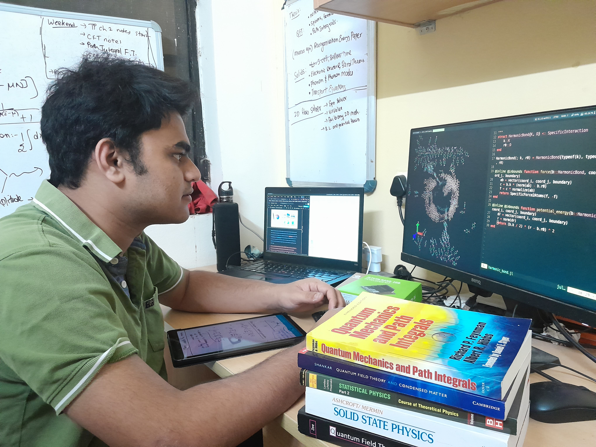

Pranay Venkatesh's Website
Links : Resume | GitHub | LinkedIn | CringeTube (YouTube) | BasedTube (Odysee)

Some things about me
- I am an undergrad at BITS Pilani, India double majoring in chemistry and chemical engineering
- I'm also a visiting research student at the Frost group, Imperial College, London.
- There's a certain set of problems that I'd like to work on:
- Numerical simulations for Molecular Systems
- Properties of Quasi-Particles (polarons, excitons) in Semiconductors
- Electronic materials for Photovoltaics and Display technology
- Organic Electronics, e.g. OPV, OLED, OECT, OTFT
- Non-Adiabatic Dynamics and Path Integrals
- Nano-scale Transport Phenomena and NEMS devices
- Electronic Nano-device modelling and TCAD.
- Pretty much anything where you can use fun mathematical models and simulations for matter
- I also like to write programs in Julia
- I like anime, cricket, carnatic music and philosophy